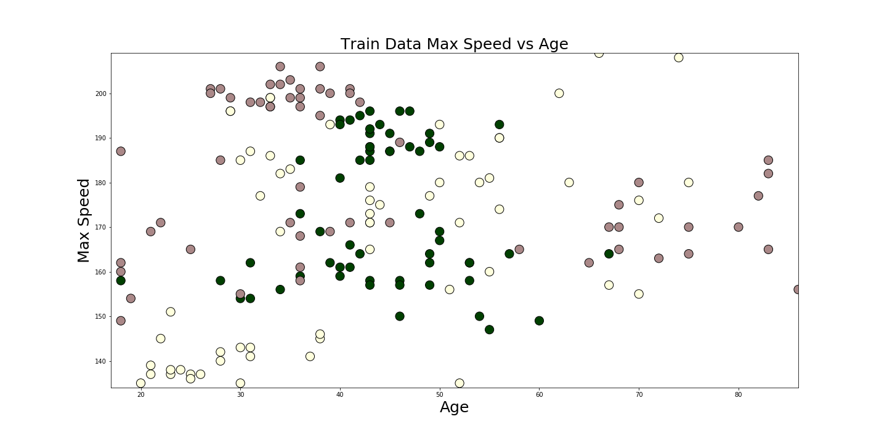

Workshop: Machine Learning auch für Dein Projekt
ML Summit, Berlin, October 2018
Oliver Zeigermann / @DJCordhose
https://djcordhose.github.io/ai/2018_ml_summit_application_workshop.html
Agenda
- Einführung in die Idee von Machine Learning: 90 Minuten
- Einführung in Anwendungsgebiete: 30 Minuten
- Eigene Anwendungsgebiete erarbeiten: 30 Minuten
- Vorstellung und Abschlussdiskussion: 30 Minuten
Teil I
Was geht mit Machine Learning (und was nicht)
Ein Fallbeispiel
Kunden-Ranking für KfZ-Versicherung
Wie würde ich (47) mit einem 56-PS-Auto abschneiden?
Experiment #1 - Wie funktioniert Supervised Learning?
Bildet Cluster der unterschiedlichen Kundenarten auf dem Handout
- grün (dunkel): guter Kunde
- gelb (hell): mittelguter Kunde
- rot (mittel): schwacher Kunde
Wichtig: Bitte die Cluster mit Kugelschreiber malen und ordentlich aufdrücken
Plötzliche Wendung
Verallgemeinerung und nicht perfekte Wiedergabe ist das Ziel
Es macht keinen Sinn, die Kundenqualität für Daten vorherzusagen, die man schon kennt.
Unser Cluster müssen daher auch für Daten funktionieren, die wir noch nicht betrachtet haben
Wie gut funktioniert die Vorhersage auf unbekannten Daten?
- Wir teilen alle zur Verfügung stehenden Daten in 2 Teile
- Den größeren Teil der Daten (60 oder 80%) benutzen wir, um unser Modell zu bilden
- Das Modell ist in diesem Fall euer Zettel mit den Clustern
- Der kleinere Teil der Daten wird zur Überprüfung des Modells verwendet - diesen Teil dürfen wir uns nicht vorher ansehen
Experiment #1, Teil #2 - Wie gut hat die Verallgemeinerung funktioniert?
- Bitte umblättern und die durchgedrückten Linien nachzeichnen
- Auf diesem Blatt seht ihr die Testdaten zur Überprüfung des Modells
- Passen eure Cluster immer noch genau so gut auf diese Daten?
- Hättet ihr die Cluster anders eingezeichnet wenn ihr gewusst hättet, dass es um eine Generalisierung geht?
Beispiellösung: Fein

Train

Test
Beispiellösung: Grob

Train

Test
Wie automatisiert man das?
Ansatz: Von Hand kodierte Regeln
if age < 25:
if speed > 180:
return red
else:
return yellow
if age > 75:
return red
if km_per_year > 50:
return red
if km_per_year > 35:
return yellow
return green
Keine tollen Ergebnisse
Sind das alle Regeln? Sind die richtig?

ca. 43% korrekte Vorhersagen auf unbekannten Daten (raten wäre 33%)
Ansatz: Stochastisches Modell


Bessere Ergebnisse

ca. 53% korrekte Vorhersagen
Aber
- 53% ist nun auch nicht ein sooo tolles Ergebnis
- Modellierung erfordert viel Domänenwissen
- Modell passt sich nicht automatisch an
Supervised Machine Learning

Strategien
- Es gibt unterschiedliche Lernstrategien
- Für unser Problem reicht eines der einfachsten Strategien: KNN
KNN: k Nearest Neighbors

Beste Ergebnisse für k=13

ca. 75% auf Testdaten
Weitere Lernstrategien
- Logistische Regression: Trennung von Klassen per Logistischer Funktion (Sigmoid)
- Decision Trees: Entscheidungsbaum bei dem die Ebenen und Unterscheidungsegeln erlernt werden
- Neural Networks (Deep Learning): Zusammenschaltung vieler Logistischer Regression
Unsupervised Learning: Clustering
3 Arten von Machine Learning

Daten: Zentraler Punkt

Unsupervised Learning

Automatisierung

Grundlegendster Algorithmus

Hätten wir auch nicht besser hinbekommen
Reinforcement Learning
Am ehesten die Roboter, die uns Menschen ausrotten
Teil II
Wie findet ihr eigene Anwendungsmöglichkeiten?
Eine Analogie
Die Machine Learning Technologie ist der Motor
Eure Daten sind der Treibstoff
Nur wenn beides da ist läuft die Maschine
Ansatz nach Art der Daten

Fragestellungen
- Was wollt ihr mit ML erreichen?
- Habt ihr Daten und wenn ja was für welche?
Mögliche Ziele
- weniger Fehler
- intuitive Bauchentscheidungen los werden
- schnelleres Arbeiten, höherer Durchsatz
- bessere Qualität, zufriedenere Kunden
- Personal einsparen
- Kreativität fördern oder erst ermöglichen
Beispiele
Bessere Qualität, Personal einsparen
Zalando streicht 250 Stellen in der Marketingabteilung am Unternehmensstandort Berlin. Werbe-E-Mails sollen in Zukunft verstärkt von Algorithmen oder Künstlicher Intelligenz verschickt werden.
"Wir gehen davon aus, dass Marketing in Zukunft noch datenbasierter sein muss. Dafür brauchen wir einen höheren Anteil an Entwicklern und Datenanalysten", sagt Rubin Ritter, Co-Chef von Zalando, gegenüber der FAZ.
Die Post testet 2018 selbstfahrende Lieferfahrzeuge
"Sie werden in der Lage sein, dem Zusteller autonom zu folgen - sodass er nicht vor jedem Hauseingang aus- und wieder einsteigen und wenige Meter fahren muss."

http://www.spiegel.de/auto/aktuell/post-testet-selbstfahrende-streetscooter-a-1172300.html
Maschinen verstehen Sprache und können sich dazu verhalten

Nur zwei dieser Bilder sind echte Fotos

https://twitter.com/goodfellow_ian/status/918900712901197824
Die anderen sind mit Neuronalen Netzwerken generiert

Minimale Information reicht, um ein gutes Angebot zu machen

Aber so ganz kriegt man den Kunden noch nicht angekleidet

Visually-Aware Fashion Recommendation and Design with Generative Image Models
schnelleres Arbeiten, höherer Durchsatz
Welche Dokumente hat der Kunde eingericht?
... schwerer als man denken könnte

sehr ähnliche Farbe
dasselbe Format wie die
moderne Version der Führerscheins
Einfache Regeln reichen oft nicht
Customer Churn / Conversion

Kunde vor und nach Abschluss

Glaskugel
Wie verhält sich jemand, der später Kunde wird / kündigt?
Weitere Anwendungsgebiete
- Recommendation Systems: Spotify und Netflix kennen mich besser als ich mich selbst
- Making decisions: Sollte jemand einen Kredit bekommen oder versichert werden?
- Fraud Detection: Sieht eine Kredit-Karten-Transaktion oder eine Steuererklärung ungewöhnlich aus?
- Predictive Maintenance: KI systems sagen wann man ein Wasserrohr ersetzen soll bevor es bricht
- Expert System: Zuordnung von Krankheit und Maßnahmen
Abschlussübung: Ideen für den Einsatz von Machine Learning in eurem Bereich oder auf euren Daten
- Aufteilen in Vierer-Gruppen
- Pro Gruppe ein Tisch und ein Flip-Chart
- Bitte erstellt eine Skizze/grafische Darstellung eurer Ideen
- Stellt eure Skizze kurz den anderen vor
Gruppenarbeit 30 Minuten, Vorstellung max. 5 Minuten pro Gruppe